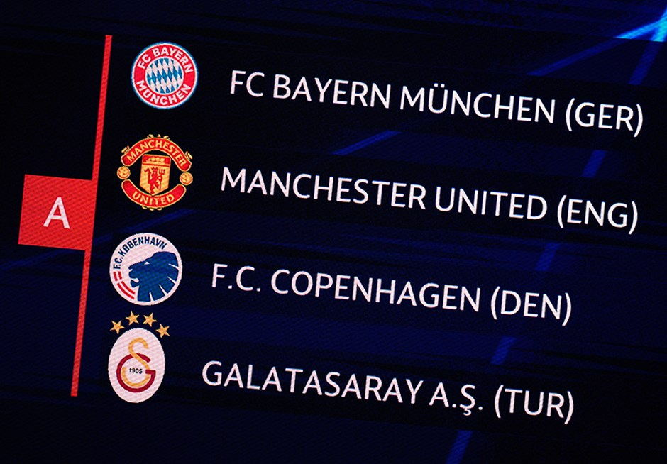
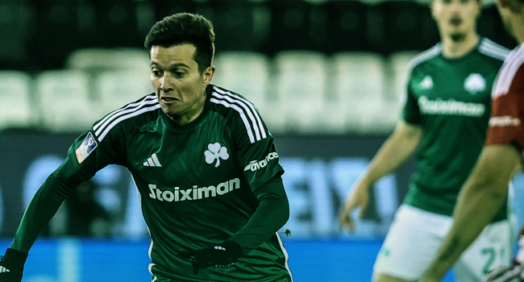
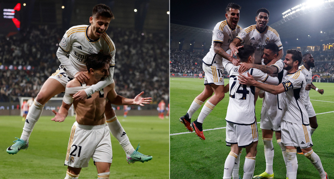
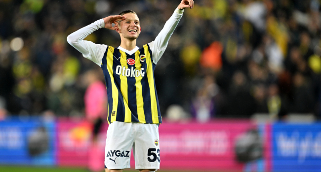
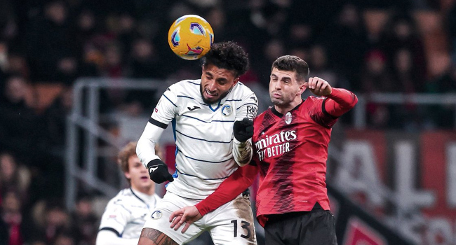
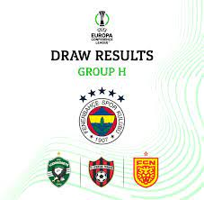
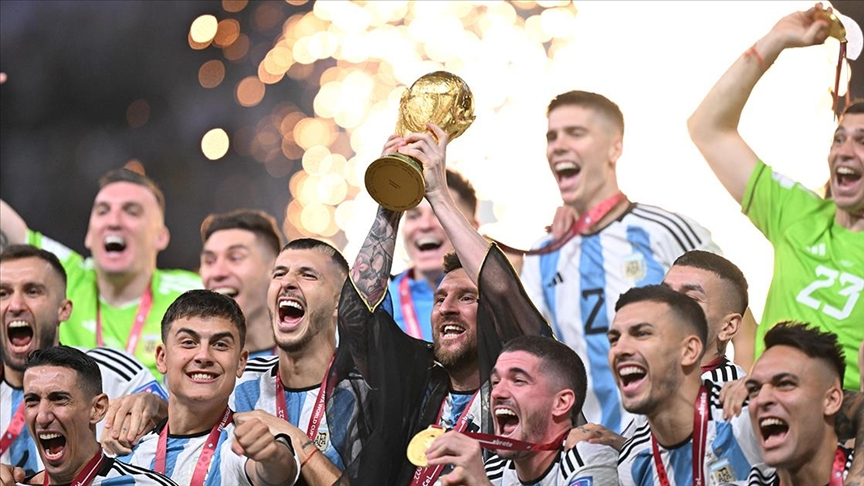
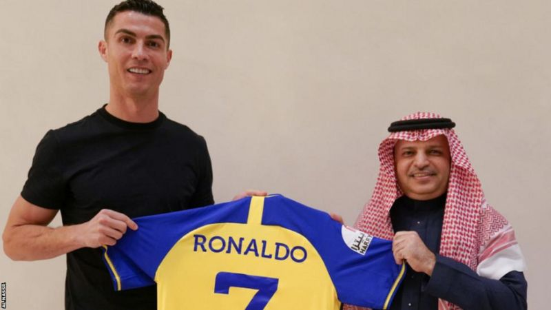

Galatasaray'ın Şampiyonlar Ligi'nin grubu belli oldu.

Galatasaray şampiyonlar ligi kurası belli oldu. Sarı kırmızılıların A grubundaki rakipleri Danimarka şampiyonu Kopenhag, Alman panzerleri Bayern Münih ve son yıllardır istediği ivmeyi yakalamayan İngilizlerin Kırmızı Şeytanları Manchester United oldu.
Terim'li Panathinaikos, ezeli rakibi Olympiakos ile berabere.

Apostolos Nikolaidis Stadı'nda oynanan mücadelede Olympiakos, 45. dakikada Sotirios Alexandropoulos'un golüyle ilk devreyi 1-0 önde tamamladı.
Panathinaikos, bu gole 65. dakikada Fotis Ioannidis ile cevap verdi ve mücadele 1-1'lik eşitlikle sona erdi.
Karşılaşmanın rövanşı, 17 Ocak'ta Olympiakos'un ev sahipliğinde oynanacak.
Fatih Terim yönetiminde üçüncü maçına çıkan Panathinaikos, ligde oynadığı iki karşılaşmadan galip ayrılmıştı.
Real Madrid Süper Kupa'da finalde

İspanya Süper Kupa'da oynanan derbide Real Madrid, normal süresi 3-3 biten maçın uzatma devrelerinde Atletico Madrid'i 5-3 yenerek finale yükseldi. Milli futbolcumuz Arda Güler, 112. dakikada oyuna girdi.Karşılaşmanın ardından açıklamalarda bulunan Arda Güler, şu sözleri kullandı;
"Finalde rakip fark etmez. Biz Real Madrid'iz. Kim gelirse gelsin kupayı kazanmak için oynayacağız. 5-6 aylık bir sakatlıktan çıktım, hocamız hemen kadroya aldı ve oynattı. Güvenini bana sürekli ifade ediyor. Böyle devam edersem her şey daha iyi olacak. Türkiye'den de çok büyük destek var. Hepsine teşekkür ederim, inşallah güzel günler bizi bekliyor. Milli Takım için oynamayı çok özledim. Yeni bir jenerasyon, yeni bir hoca var. Her şey çok güzel gidiyor. Umarım EURO 2024'te her şey güzel olacak. Ciddi ve güzel işler yapabiliriz orada."
Szymanski: Hızlı ve güçlü oynadık

Trendyol Süper Lig'de ertelenen 16. hafta maçında sahasında TÜMOSAN Konyaspor'u 7-1 yenen Fenerbahçe'nin Polonyalı orta sahası Sebastian Szymanski, "Fiziksel olarak ne kadar iyi olduğumuzu saha içine gösterdik. Hızlı ve güçlü oynadık" dedi. Sebastian Szymanski, şunları da ekledi :
“Çok önemli bir üç puan aldık. Bununla mutlu olabiliriz ama maçı bir gol yiyerek tamamladık. Bunun üzerine düşünmemiz ve maçı tamamen kontrol etmemiz gerekiyor. Galibiyet için mutluyuz ve bu şekilde devam etmemiz gerekiyor. Bence futbolda en güzel şey bir oyuncu için üç günde bir maç oynamaktır. Zaman zaman yorgun hissedebiliyoruz ama sahaya çıktığınız zaman bunu pek fazla hissetmiyorsunuz. Fiziksel olarak ne kadar iyi olduğumuzu saha içine gösterdik. Hızlı ve güçlü oynadık. Güzel bir üç puan aldık.”
Milan'ı yıkan Atalanta yarı finalde.

İtalya Kupası çeyrek final maçında Milan'ı deplasmanda 2-1 mağlup eden Atalanta, adını yarı finale yazdırdı.
TRT SPOR'dan canlı yayınlanan çeyrek final müsabakasında Serie A'da zirve takibini sürdüren Milan ile ligin güçlü ekiplerinden Atalanta kozlarını paylaştı.
Ev sahibi Milan, 45. dakikada Rafa Leao’nun harika golüyle 1-0 öne geçti.
Atalanta, 45+2'de Teun Koopmeiners'in nefis golüyle Milan'a yanıt verdi: 1-1.
Konuk takım Atalanta, 59. dakikada Koopmeiners'in penaltıdan kaydettiiği golle 2-1 öne geçti.
Kalan sürede başka gol olmadı ve maçı 2-1 kazanan Atalanta, İtalya Kupası'nda yarı final biletini cebine koydu.
Atalanta, yarı finalde Fiorentina ile eşleşti.
Fenerbahçemizin UEFA Avrupa Konferans Ligi’ndeki rakipleri belli oldu.

UEFA Avrupa Konferans Ligi'nde ön eleme ve play off maçlarını namağlup geçerek adını gruplara yazdıran Fenerbahçemizin rakipleri belli oldu. Monaco’da yapılan kura çekimine birinci torbadan katılan Futbol A Takımımız, H Grubu’nda Ludogorets (Bulgaristan), Spartak Trnava (Slovakya) ve Nordsjaelland (Danimarka) ile eşleşti.
Arjantin Dünya Kupasını kazandı

Katar'ın ev sahipliğinde düzenlenen 2022 FIFA Dünya Kupası'nı, normal süresi 2-2, uzatma bölümü 3-3 sona eren finalde, Fransa'yı penaltı atışlarıyla yenen Arjantin kazandı
Tarihinde üçüncü kez Dünya Kupası'nı kazanan Arjantin, 1986'dan sonra kupayı kazanarak 36 yıllık şampiyonluk özlemine son verdi.
Arjantin, Dünya Kupası'nı üçüncü kez kazandı
Arjantin, Dünya Kupası'nda üçüncü kez şampiyonluk ipini göğüsledi.
"Tangocular" futbolun milli takımlar düzeyindeki bir numaralı organizasyonunda 1978 ve 1986'nın ardından üçüncü kez kupayı müzesine götürmeyi başardı.
Ronaldo, Suudi Arabistan takımı Al Nassr'a transfer oldu

Ronaldo, Al Nassr ile 2025 yılına kadar sözleşme imzaladı.
Al Nassr tarafından sosyal medyada Ronaldo’nun kulüp formasını tuttuğu bir fotoğraf paylaşıldı.
Son olarak İngiltere Premier Lig takımlarından Manchester United forması giyerken verdiği bir röportajda kulübünü eleştiren Ronaldo’nun sözleşmesi feshedilmişti.
Yıldız futbolcunun Suudi Arabistan takımından yılda yaklaşık 200 milyon euro maaş alacağı bildirildi. Bu, futbol tarihinde bir rekor.
37 yaşındaki futbolcu, başka bir ülkede yeni bir futbol ligini tecrübe etmeye sabırsızlandığını söyledi.
Avrupa futbolunda tüm başarıları elde ettiği için kendisini şanslı hissettiğini söyleyen Ronaldo, “Tecrübelerimi şimdi Asya’da paylaşmanın vakti geldi diye düşünüyorum” dedi.